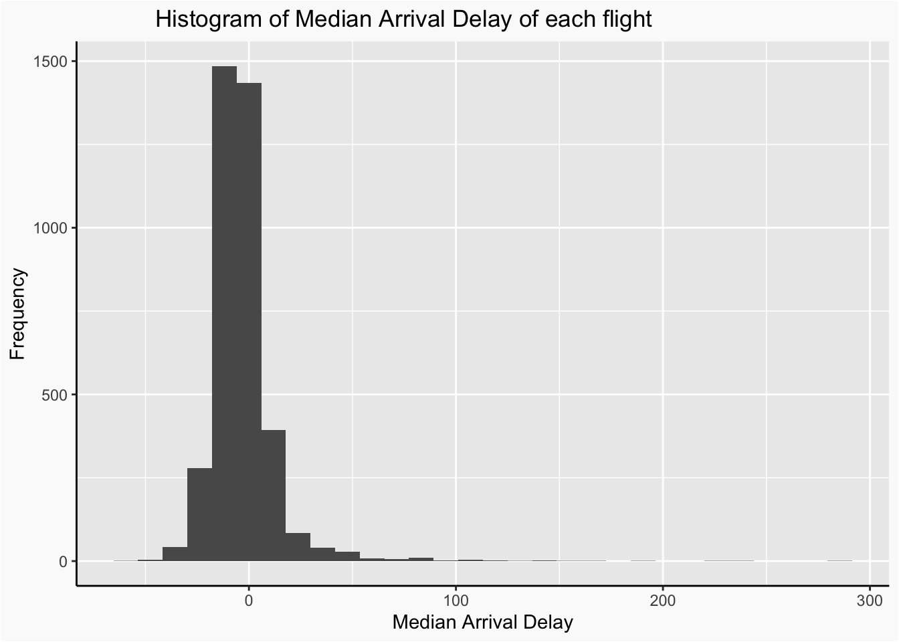
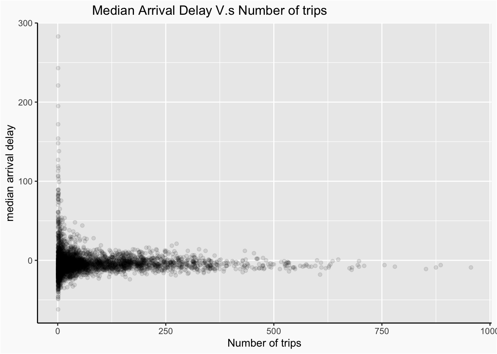
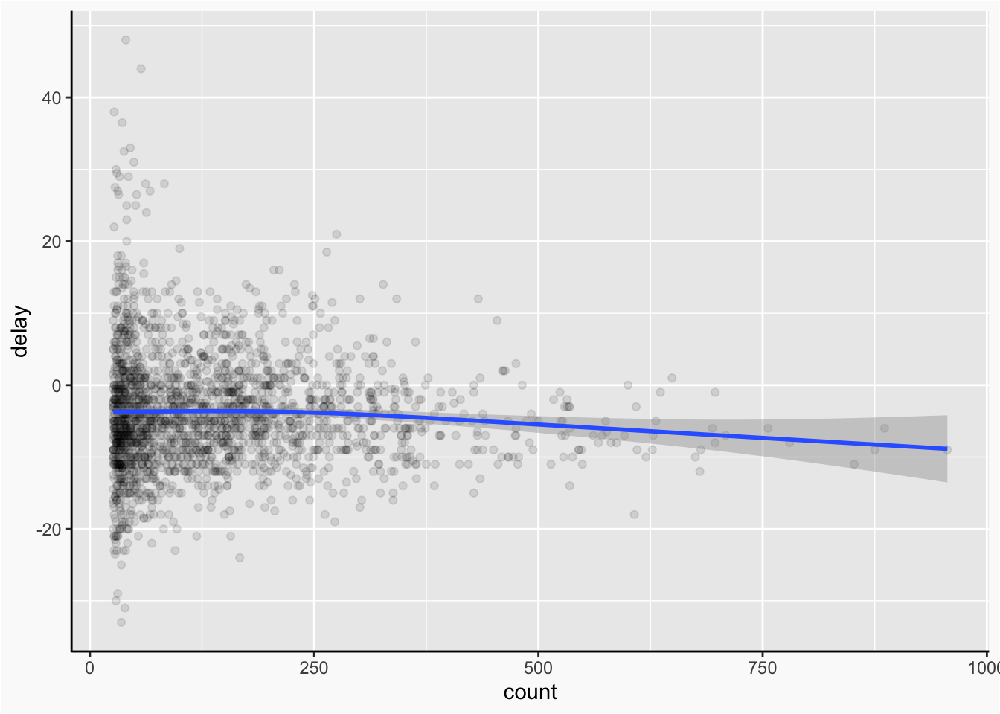

Chapter 3 Data transformation in R
Jiongxin Ye and Zhuoyan Ma
3.1 Introduction
Data visualizations are nice and insightful, but we usually spend more time formatting, cleaning and wrangling the data. Sometimes, we need to transform the data to perform a better visualization, or maybe we just want to rename the variables and get summaries. No matter for detect factual information or implicit relationships, data transformation plays an important role, helping us to dig deeper and wider and thus telling a better story from data.
As a result, we want share some useful methods of data transformation to let you play with data more efficiently. Specifically, we want to provide a detailed instruction of package dplyr. We hope that you can know the various methods in changing the data frame and function in selecting the data which you want after reading this article.
3.2 Basics
As said before, we will mainly use dplyr package, which will be automatically installed if you install the tidyverse.
- filter: select observations by their values
- arrange: reorder observations
- select: pick variables by their names
- mutate: create or rename variables
- summarize: aggregate observations
- group_by: group observations by variables
All dplyr “verbs” are functions that take a data frame and return a data frame after the operation
To explore the basic data manipulation of dplur, we will demonstrate using nycflights13::flights. It’s a dataset which contains information of 336,776 flights that departed from New York City in 2013. You can access it by installing the packages ‘nycflights13’.
## # A tibble: 336,776 x 19
## year month day dep_time sched_dep_time dep_delay arr_time sched_arr_time
## <int> <int> <int> <int> <int> <dbl> <int> <int>
## 1 2013 1 1 517 515 2 830 819
## 2 2013 1 1 533 529 4 850 830
## 3 2013 1 1 542 540 2 923 850
## 4 2013 1 1 544 545 -1 1004 1022
## 5 2013 1 1 554 600 -6 812 837
## 6 2013 1 1 554 558 -4 740 728
## 7 2013 1 1 555 600 -5 913 854
## 8 2013 1 1 557 600 -3 709 723
## 9 2013 1 1 557 600 -3 838 846
## 10 2013 1 1 558 600 -2 753 745
## # … with 336,766 more rows, and 11 more variables: arr_delay <dbl>,
## # carrier <chr>, flight <int>, tailnum <chr>, origin <chr>, dest <chr>,
## # air_time <dbl>, distance <dbl>, hour <dbl>, minute <dbl>, time_hour <dttm>3.3 Function Usage
3.3.1 1. Filter( )
To select observations we can use filter:
filter (.data, condition1, condition2, …, conditionN)
where each condition evaluates to a logical vector and only TRUE entries are kept.
Example:
- we want to focus on the flight whose carrier is UA.
## # A tibble: 6 x 19
## year month day dep_time sched_dep_time dep_delay arr_time sched_arr_time
## <int> <int> <int> <int> <int> <dbl> <int> <int>
## 1 2013 1 1 517 515 2 830 819
## 2 2013 1 1 533 529 4 850 830
## 3 2013 1 1 554 558 -4 740 728
## 4 2013 1 1 558 600 -2 924 917
## 5 2013 1 1 558 600 -2 923 937
## 6 2013 1 1 559 600 -1 854 902
## # … with 11 more variables: arr_delay <dbl>, carrier <chr>, flight <int>,
## # tailnum <chr>, origin <chr>, dest <chr>, air_time <dbl>, distance <dbl>,
## # hour <dbl>, minute <dbl>, time_hour <dttm>What we found:
There are UA_num, 58665, flights whose carrier is UA in nycflights13 dataset.
- We also can use filter to remove rows that associated with NA values of certain variables like dep_time.
What we found:
we remove over 8,000 rows whose dep_time is NA. The total number of observations after removing the NA objects in dep_time is dep_num, which is 328521.
- More importantly, we can cooperate with logical operators ! (not), | (or), & (and) and some statistical rules such as De Morgan’s Law, to add more conditions in the filter function in a way you like.
Below three approaches are equivalent to find flights in January and Feburary.
## # A tibble: 51,955 x 19
## year month day dep_time sched_dep_time dep_delay arr_time sched_arr_time
## <int> <int> <int> <int> <int> <dbl> <int> <int>
## 1 2013 1 1 517 515 2 830 819
## 2 2013 1 1 533 529 4 850 830
## 3 2013 1 1 542 540 2 923 850
## 4 2013 1 1 544 545 -1 1004 1022
## 5 2013 1 1 554 600 -6 812 837
## 6 2013 1 1 554 558 -4 740 728
## 7 2013 1 1 555 600 -5 913 854
## 8 2013 1 1 557 600 -3 709 723
## 9 2013 1 1 557 600 -3 838 846
## 10 2013 1 1 558 600 -2 753 745
## # … with 51,945 more rows, and 11 more variables: arr_delay <dbl>,
## # carrier <chr>, flight <int>, tailnum <chr>, origin <chr>, dest <chr>,
## # air_time <dbl>, distance <dbl>, hour <dbl>, minute <dbl>, time_hour <dttm>## # A tibble: 51,955 x 19
## year month day dep_time sched_dep_time dep_delay arr_time sched_arr_time
## <int> <int> <int> <int> <int> <dbl> <int> <int>
## 1 2013 1 1 517 515 2 830 819
## 2 2013 1 1 533 529 4 850 830
## 3 2013 1 1 542 540 2 923 850
## 4 2013 1 1 544 545 -1 1004 1022
## 5 2013 1 1 554 600 -6 812 837
## 6 2013 1 1 554 558 -4 740 728
## 7 2013 1 1 555 600 -5 913 854
## 8 2013 1 1 557 600 -3 709 723
## 9 2013 1 1 557 600 -3 838 846
## 10 2013 1 1 558 600 -2 753 745
## # … with 51,945 more rows, and 11 more variables: arr_delay <dbl>,
## # carrier <chr>, flight <int>, tailnum <chr>, origin <chr>, dest <chr>,
## # air_time <dbl>, distance <dbl>, hour <dbl>, minute <dbl>, time_hour <dttm>## # A tibble: 51,955 x 19
## year month day dep_time sched_dep_time dep_delay arr_time sched_arr_time
## <int> <int> <int> <int> <int> <dbl> <int> <int>
## 1 2013 1 1 517 515 2 830 819
## 2 2013 1 1 533 529 4 850 830
## 3 2013 1 1 542 540 2 923 850
## 4 2013 1 1 544 545 -1 1004 1022
## 5 2013 1 1 554 600 -6 812 837
## 6 2013 1 1 554 558 -4 740 728
## 7 2013 1 1 555 600 -5 913 854
## 8 2013 1 1 557 600 -3 709 723
## 9 2013 1 1 557 600 -3 838 846
## 10 2013 1 1 558 600 -2 753 745
## # … with 51,945 more rows, and 11 more variables: arr_delay <dbl>,
## # carrier <chr>, flight <int>, tailnum <chr>, origin <chr>, dest <chr>,
## # air_time <dbl>, distance <dbl>, hour <dbl>, minute <dbl>, time_hour <dttm>3.3.1.1 More exercises:
Find flights that:
- Were delayed by at least an hour, but made up over 30 minutes in flight
## # A tibble: 2,046 x 19
## year month day dep_time sched_dep_time dep_delay arr_time sched_arr_time
## <int> <int> <int> <int> <int> <dbl> <int> <int>
## 1 2013 1 1 1716 1545 91 2140 2039
## 2 2013 1 1 2205 1720 285 46 2040
## 3 2013 1 1 2326 2130 116 131 18
## 4 2013 1 3 1503 1221 162 1803 1555
## 5 2013 1 3 1821 1530 171 2131 1910
## 6 2013 1 3 1839 1700 99 2056 1950
## 7 2013 1 3 1850 1745 65 2148 2120
## 8 2013 1 3 1923 1815 68 2036 1958
## 9 2013 1 3 1941 1759 102 2246 2139
## 10 2013 1 3 1950 1845 65 2228 2227
## # … with 2,036 more rows, and 11 more variables: arr_delay <dbl>,
## # carrier <chr>, flight <int>, tailnum <chr>, origin <chr>, dest <chr>,
## # air_time <dbl>, distance <dbl>, hour <dbl>, minute <dbl>, time_hour <dttm>- Flew to Boston operated by United, American or Delta in Summer (June to August)
filter(flights, dest == "BOS",
carrier == "UA" | carrier == "AA" | carrier == "DL",
month %in% c(6, 7, 8))## # A tibble: 1,663 x 19
## year month day dep_time sched_dep_time dep_delay arr_time sched_arr_time
## <int> <int> <int> <int> <int> <dbl> <int> <int>
## 1 2013 6 1 816 820 -4 920 930
## 2 2013 6 1 1022 1025 -3 1130 1150
## 3 2013 6 1 1240 1245 -5 1343 1350
## 4 2013 6 1 1519 1530 -11 1705 1702
## 5 2013 6 1 1524 1445 39 1634 1615
## 6 2013 6 1 1555 1600 -5 1705 1720
## 7 2013 6 1 1954 1955 -1 2116 2110
## 8 2013 6 1 2010 2000 10 2115 2130
## 9 2013 6 1 2124 2125 -1 2224 2256
## 10 2013 6 1 2152 2159 -7 2252 2328
## # … with 1,653 more rows, and 11 more variables: arr_delay <dbl>,
## # carrier <chr>, flight <int>, tailnum <chr>, origin <chr>, dest <chr>,
## # air_time <dbl>, distance <dbl>, hour <dbl>, minute <dbl>, time_hour <dttm>3.3.2 2. Arrange( )
Arrange( ) function lets us to reorder the rows in a order that we want:
arrange (.data, variable1, variable2,…, .by_group = FALSE)
It’s default in increasing order. To reorder decreasingly, use desc. You can also reorder the rows by group, using .by_group.
Example:
- we can reorder the flight by the delay in departure in a increasing order.
## # A tibble: 336,776 x 19
## year month day dep_time sched_dep_time dep_delay arr_time sched_arr_time
## <int> <int> <int> <int> <int> <dbl> <int> <int>
## 1 2013 12 7 2040 2123 -43 40 2352
## 2 2013 2 3 2022 2055 -33 2240 2338
## 3 2013 11 10 1408 1440 -32 1549 1559
## 4 2013 1 11 1900 1930 -30 2233 2243
## 5 2013 1 29 1703 1730 -27 1947 1957
## 6 2013 8 9 729 755 -26 1002 955
## 7 2013 10 23 1907 1932 -25 2143 2143
## 8 2013 3 30 2030 2055 -25 2213 2250
## 9 2013 3 2 1431 1455 -24 1601 1631
## 10 2013 5 5 934 958 -24 1225 1309
## # … with 336,766 more rows, and 11 more variables: arr_delay <dbl>,
## # carrier <chr>, flight <int>, tailnum <chr>, origin <chr>, dest <chr>,
## # air_time <dbl>, distance <dbl>, hour <dbl>, minute <dbl>, time_hour <dttm>What we found:
The data has been reorder by dep_delay value from small to large.
- we can reorder the flight by the delay in departure in a decreasing order.
## # A tibble: 336,776 x 19
## year month day dep_time sched_dep_time dep_delay arr_time sched_arr_time
## <int> <int> <int> <int> <int> <dbl> <int> <int>
## 1 2013 1 9 641 900 1301 1242 1530
## 2 2013 6 15 1432 1935 1137 1607 2120
## 3 2013 1 10 1121 1635 1126 1239 1810
## 4 2013 9 20 1139 1845 1014 1457 2210
## 5 2013 7 22 845 1600 1005 1044 1815
## 6 2013 4 10 1100 1900 960 1342 2211
## 7 2013 3 17 2321 810 911 135 1020
## 8 2013 6 27 959 1900 899 1236 2226
## 9 2013 7 22 2257 759 898 121 1026
## 10 2013 12 5 756 1700 896 1058 2020
## # … with 336,766 more rows, and 11 more variables: arr_delay <dbl>,
## # carrier <chr>, flight <int>, tailnum <chr>, origin <chr>, dest <chr>,
## # air_time <dbl>, distance <dbl>, hour <dbl>, minute <dbl>, time_hour <dttm>What we found:
The data has been reorder by dep_delay value from large to small.
- we can reorder the flight by the month and day.
## # A tibble: 336,776 x 19
## year month day dep_time sched_dep_time dep_delay arr_time sched_arr_time
## <int> <int> <int> <int> <int> <dbl> <int> <int>
## 1 2013 1 1 517 515 2 830 819
## 2 2013 1 1 533 529 4 850 830
## 3 2013 1 1 542 540 2 923 850
## 4 2013 1 1 544 545 -1 1004 1022
## 5 2013 1 1 554 600 -6 812 837
## 6 2013 1 1 554 558 -4 740 728
## 7 2013 1 1 555 600 -5 913 854
## 8 2013 1 1 557 600 -3 709 723
## 9 2013 1 1 557 600 -3 838 846
## 10 2013 1 1 558 600 -2 753 745
## # … with 336,766 more rows, and 11 more variables: arr_delay <dbl>,
## # carrier <chr>, flight <int>, tailnum <chr>, origin <chr>, dest <chr>,
## # air_time <dbl>, distance <dbl>, hour <dbl>, minute <dbl>, time_hour <dttm>What we found:
The data has been reorder by 2 variables: month and day. For the object with same month, they are reordering by day.
- we can reorder the flight by the delay in departure in a decreasing order group by carrier.
## # A tibble: 336,776 x 19
## # Groups: carrier [16]
## year month day dep_time sched_dep_time dep_delay arr_time sched_arr_time
## <int> <int> <int> <int> <int> <dbl> <int> <int>
## 1 2013 2 16 757 1930 747 1013 2149
## 2 2013 7 24 1525 815 430 1808 1030
## 3 2013 11 27 1503 815 408 1628 952
## 4 2013 2 27 1529 845 404 1639 1015
## 5 2013 7 7 2228 1559 389 NA 1828
## 6 2013 6 25 1421 805 376 1602 950
## 7 2013 1 25 15 1815 360 208 1958
## 8 2013 12 14 1425 825 360 1604 938
## 9 2013 9 12 2159 1600 359 2400 1818
## 10 2013 7 22 2216 1620 356 116 1853
## # … with 336,766 more rows, and 11 more variables: arr_delay <dbl>,
## # carrier <chr>, flight <int>, tailnum <chr>, origin <chr>, dest <chr>,
## # air_time <dbl>, distance <dbl>, hour <dbl>, minute <dbl>, time_hour <dttm>What we found:
The data has been reorder by grouping the carrier and then order by dep_delay value from large to small. Since the carrier is nominal variable, the carrier order is default. Attention: If we don’t use the .by_group in arrange( ), the data will be reorder just by dep_delay value although we have group_by the data in previous.
3.3.3 3. Select( )
It subsets a dataset containing only selected variables.
select (.data, variable_expression)
Some helper functions:
- Negative indices remove variables from the selection.
- A:B, from column A to column B
- starts_with(“abc”): matches names starting with “abc”
- ends_with(“xyz”): matches names ending with “xyz”
- contains(“ijk”): matches names containing “ijk”
- num_range(“x”, 1:3): matches x1, x2, x3
We can use the operators in selecting the variables easily and use c( ) to combine selections.
Example:
- Select year, month, day, destination columns from flights.
## # A tibble: 336,776 x 4
## year month day dest
## <int> <int> <int> <chr>
## 1 2013 1 1 IAH
## 2 2013 1 1 IAH
## 3 2013 1 1 MIA
## 4 2013 1 1 BQN
## 5 2013 1 1 ATL
## 6 2013 1 1 ORD
## 7 2013 1 1 FLL
## 8 2013 1 1 IAD
## 9 2013 1 1 MCO
## 10 2013 1 1 ORD
## # … with 336,766 more rowswe can also use the columns number to represent the columns name.
## # A tibble: 336,776 x 4
## year month day dest
## <int> <int> <int> <chr>
## 1 2013 1 1 IAH
## 2 2013 1 1 IAH
## 3 2013 1 1 MIA
## 4 2013 1 1 BQN
## 5 2013 1 1 ATL
## 6 2013 1 1 ORD
## 7 2013 1 1 FLL
## 8 2013 1 1 IAD
## 9 2013 1 1 MCO
## 10 2013 1 1 ORD
## # … with 336,766 more rowswe can also use | to union the variable set.
## # A tibble: 336,776 x 4
## year month day dest
## <int> <int> <int> <chr>
## 1 2013 1 1 IAH
## 2 2013 1 1 IAH
## 3 2013 1 1 MIA
## 4 2013 1 1 BQN
## 5 2013 1 1 ATL
## 6 2013 1 1 ORD
## 7 2013 1 1 FLL
## 8 2013 1 1 IAD
## 9 2013 1 1 MCO
## 10 2013 1 1 ORD
## # … with 336,766 more rows- Select all columns except year, month, day, destination from flights.
## # A tibble: 336,776 x 19
## dep_time sched_dep_time dep_delay arr_time sched_arr_time arr_delay carrier
## <int> <int> <dbl> <int> <int> <dbl> <chr>
## 1 517 515 2 830 819 11 UA
## 2 533 529 4 850 830 20 UA
## 3 542 540 2 923 850 33 AA
## 4 544 545 -1 1004 1022 -18 B6
## 5 554 600 -6 812 837 -25 DL
## 6 554 558 -4 740 728 12 UA
## 7 555 600 -5 913 854 19 B6
## 8 557 600 -3 709 723 -14 EV
## 9 557 600 -3 838 846 -8 B6
## 10 558 600 -2 753 745 8 AA
## # … with 336,766 more rows, and 12 more variables: flight <int>, tailnum <chr>,
## # origin <chr>, dest <chr>, air_time <dbl>, distance <dbl>, hour <dbl>,
## # minute <dbl>, time_hour <dttm>, year <int>, month <int>, day <int>- We can also use the c( ) to combine the variables.
## # A tibble: 336,776 x 15
## dep_time sched_dep_time dep_delay arr_time sched_arr_time arr_delay carrier
## <int> <int> <dbl> <int> <int> <dbl> <chr>
## 1 517 515 2 830 819 11 UA
## 2 533 529 4 850 830 20 UA
## 3 542 540 2 923 850 33 AA
## 4 544 545 -1 1004 1022 -18 B6
## 5 554 600 -6 812 837 -25 DL
## 6 554 558 -4 740 728 12 UA
## 7 555 600 -5 913 854 19 B6
## 8 557 600 -3 709 723 -14 EV
## 9 557 600 -3 838 846 -8 B6
## 10 558 600 -2 753 745 8 AA
## # … with 336,766 more rows, and 8 more variables: flight <int>, tailnum <chr>,
## # origin <chr>, air_time <dbl>, distance <dbl>, hour <dbl>, minute <dbl>,
## # time_hour <dttm>- Select columns end with ‘times’.
## # A tibble: 336,776 x 5
## dep_time sched_dep_time arr_time sched_arr_time air_time
## <int> <int> <int> <int> <dbl>
## 1 517 515 830 819 227
## 2 533 529 850 830 227
## 3 542 540 923 850 160
## 4 544 545 1004 1022 183
## 5 554 600 812 837 116
## 6 554 558 740 728 150
## 7 555 600 913 854 158
## 8 557 600 709 723 53
## 9 557 600 838 846 140
## 10 558 600 753 745 138
## # … with 336,766 more rows- Select columns end with ‘times’ but without the one starting with ‘sched’.
## # A tibble: 336,776 x 3
## dep_time arr_time air_time
## <int> <int> <dbl>
## 1 517 830 227
## 2 533 850 227
## 3 542 923 160
## 4 544 1004 183
## 5 554 812 116
## 6 554 740 150
## 7 555 913 158
## 8 557 709 53
## 9 557 838 140
## 10 558 753 138
## # … with 336,766 more rows- Select columns contains ‘dep’.
## # A tibble: 336,776 x 3
## dep_time sched_dep_time dep_delay
## <int> <int> <dbl>
## 1 517 515 2
## 2 533 529 4
## 3 542 540 2
## 4 544 545 -1
## 5 554 600 -6
## 6 554 558 -4
## 7 555 600 -5
## 8 557 600 -3
## 9 557 600 -3
## 10 558 600 -2
## # … with 336,766 more rows- Select year, month, day, destination columns from flights. Also columns end with ‘times’ but without the one starting with ‘sched’.
## # A tibble: 336,776 x 7
## year month day dest dep_time arr_time air_time
## <int> <int> <int> <chr> <int> <int> <dbl>
## 1 2013 1 1 IAH 517 830 227
## 2 2013 1 1 IAH 533 850 227
## 3 2013 1 1 MIA 542 923 160
## 4 2013 1 1 BQN 544 1004 183
## 5 2013 1 1 ATL 554 812 116
## 6 2013 1 1 ORD 554 740 150
## 7 2013 1 1 FLL 555 913 158
## 8 2013 1 1 IAD 557 709 53
## 9 2013 1 1 MCO 557 838 140
## 10 2013 1 1 ORD 558 753 138
## # … with 336,766 more rowsAttention: For without condition, we can also use ! to replace the -.
- We can also use
&to intersect the variables set together, which is equivalent with the previous method.
## # A tibble: 336,776 x 7
## year month day dest dep_time arr_time air_time
## <int> <int> <int> <chr> <int> <int> <dbl>
## 1 2013 1 1 IAH 517 830 227
## 2 2013 1 1 IAH 533 850 227
## 3 2013 1 1 MIA 542 923 160
## 4 2013 1 1 BQN 544 1004 183
## 5 2013 1 1 ATL 554 812 116
## 6 2013 1 1 ORD 554 740 150
## 7 2013 1 1 FLL 555 913 158
## 8 2013 1 1 IAD 557 709 53
## 9 2013 1 1 MCO 557 838 140
## 10 2013 1 1 ORD 558 753 138
## # … with 336,766 more rows- This is an example of using operations in select( ). It also approaches to the same result as before.
## # A tibble: 336,776 x 7
## year month day dest dep_time arr_time air_time
## <int> <int> <int> <chr> <int> <int> <dbl>
## 1 2013 1 1 IAH 517 830 227
## 2 2013 1 1 IAH 533 850 227
## 3 2013 1 1 MIA 542 923 160
## 4 2013 1 1 BQN 544 1004 183
## 5 2013 1 1 ATL 554 812 116
## 6 2013 1 1 ORD 554 740 150
## 7 2013 1 1 FLL 555 913 158
## 8 2013 1 1 IAD 557 709 53
## 9 2013 1 1 MCO 557 838 140
## 10 2013 1 1 ORD 558 753 138
## # … with 336,766 more rows3.3.4 4. Mutate( )
It changes variables to the format that we want. If we want to only keep the variables that we create, we should use transmute( )
mutate (.data,…, .keep = c(“all”, “used”, “unused”, “none”), .before = NULL, .after = NULL)
Some helper functions：
- Arithmetic operators: +, -, *, /, ^, %/% (integer division), and %% (remainder)
- Mathematical functions such as log, exp, sin, cos, and others
- Logical operators, e.g. !=, |, as we saw when discussing filter
- Offsets: lead and lag, e.g., to compute running difference x - lag(x)
- Aggregators: mean, sum, min, max and their respective cummulators cummean, cumsum, cummin, cummax
Example:
- We create three variables here: gain which measures in-flight time gain, duration which is flight duration in hours and speed which equals to distance divided by duration.
## # A tibble: 336,776 x 22
## year month day dep_time sched_dep_time dep_delay arr_time sched_arr_time
## <int> <int> <int> <int> <int> <dbl> <int> <int>
## 1 2013 1 1 517 515 2 830 819
## 2 2013 1 1 533 529 4 850 830
## 3 2013 1 1 542 540 2 923 850
## 4 2013 1 1 544 545 -1 1004 1022
## 5 2013 1 1 554 600 -6 812 837
## 6 2013 1 1 554 558 -4 740 728
## 7 2013 1 1 555 600 -5 913 854
## 8 2013 1 1 557 600 -3 709 723
## 9 2013 1 1 557 600 -3 838 846
## 10 2013 1 1 558 600 -2 753 745
## # … with 336,766 more rows, and 14 more variables: arr_delay <dbl>,
## # carrier <chr>, flight <int>, tailnum <chr>, origin <chr>, dest <chr>,
## # air_time <dbl>, distance <dbl>, hour <dbl>, minute <dbl>, time_hour <dttm>,
## # gain <dbl>, duration <dbl>, speed <dbl>Attention: Since the default value of .keep = “all”, we will get a new data frame with all variables and new variables.
- we can also use
.keep= “used” to get the data frame contain the new variables and variables we used in generate the new variables.
mutate(flights,gain = dep_delay - arr_delay,
duration = air_time / 60,
speed = distance / duration,
.keep = "used")## # A tibble: 336,776 x 7
## dep_delay arr_delay air_time distance gain duration speed
## <dbl> <dbl> <dbl> <dbl> <dbl> <dbl> <dbl>
## 1 2 11 227 1400 -9 3.78 370.
## 2 4 20 227 1416 -16 3.78 374.
## 3 2 33 160 1089 -31 2.67 408.
## 4 -1 -18 183 1576 17 3.05 517.
## 5 -6 -25 116 762 19 1.93 394.
## 6 -4 12 150 719 -16 2.5 288.
## 7 -5 19 158 1065 -24 2.63 404.
## 8 -3 -14 53 229 11 0.883 259.
## 9 -3 -8 140 944 5 2.33 405.
## 10 -2 8 138 733 -10 2.3 319.
## # … with 336,766 more rows- we can also use
.keep= “unused” to get the data frame contain the new variables and all variables which don’t used in calulate the new variables. This transform is equal to replace the variables using new variable related to it in this data frame.
mutate(flights,gain = dep_delay - arr_delay,
duration = air_time / 60,
speed = distance / duration,
.keep = "unused")## # A tibble: 336,776 x 18
## year month day dep_time sched_dep_time arr_time sched_arr_time carrier
## <int> <int> <int> <int> <int> <int> <int> <chr>
## 1 2013 1 1 517 515 830 819 UA
## 2 2013 1 1 533 529 850 830 UA
## 3 2013 1 1 542 540 923 850 AA
## 4 2013 1 1 544 545 1004 1022 B6
## 5 2013 1 1 554 600 812 837 DL
## 6 2013 1 1 554 558 740 728 UA
## 7 2013 1 1 555 600 913 854 B6
## 8 2013 1 1 557 600 709 723 EV
## 9 2013 1 1 557 600 838 846 B6
## 10 2013 1 1 558 600 753 745 AA
## # … with 336,766 more rows, and 10 more variables: flight <int>, tailnum <chr>,
## # origin <chr>, dest <chr>, hour <dbl>, minute <dbl>, time_hour <dttm>,
## # gain <dbl>, duration <dbl>, speed <dbl>- we can also use
.keep= “none” to get the data frame only contain the new variables. This transform is same as using default transmute.
mutate(flights,gain = dep_delay - arr_delay,
duration = air_time / 60,
speed = distance / duration,
.keep = "none")## # A tibble: 336,776 x 3
## gain duration speed
## <dbl> <dbl> <dbl>
## 1 -9 3.78 370.
## 2 -16 3.78 374.
## 3 -31 2.67 408.
## 4 17 3.05 517.
## 5 19 1.93 394.
## 6 -16 2.5 288.
## 7 -24 2.63 404.
## 8 11 0.883 259.
## 9 5 2.33 405.
## 10 -10 2.3 319.
## # … with 336,766 more rowstransmute(flights,gain = dep_delay - arr_delay,
duration = air_time / 60,
speed = distance / duration)## # A tibble: 336,776 x 3
## gain duration speed
## <dbl> <dbl> <dbl>
## 1 -9 3.78 370.
## 2 -16 3.78 374.
## 3 -31 2.67 408.
## 4 17 3.05 517.
## 5 19 1.93 394.
## 6 -16 2.5 288.
## 7 -24 2.63 404.
## 8 11 0.883 259.
## 9 5 2.33 405.
## 10 -10 2.3 319.
## # … with 336,766 more rowsAttention: The difference between Mutate( ) and Transmute( ) is that: the default return from Mutate( ) are all variables with new variables. However, the default return from transmute( ) is only the new variables. We can change the parameter in each functions and get the same result.
- We create a new boolean variable as_scheduled which indicates whether the flight delays in arrival time or departure time. And we use transmute here to only keep three variables, including the one we just created.
## # A tibble: 336,776 x 3
## arr_delay dep_delay as_scheduled
## <dbl> <dbl> <lgl>
## 1 11 2 FALSE
## 2 20 4 FALSE
## 3 33 2 FALSE
## 4 -18 -1 TRUE
## 5 -25 -6 TRUE
## 6 12 -4 FALSE
## 7 19 -5 FALSE
## 8 -14 -3 TRUE
## 9 -8 -3 TRUE
## 10 8 -2 FALSE
## # … with 336,766 more rows- We use
.beforeand.afterto determine the position of new variables. Create three variables here: gain which measures in-flight time gain, duration which is flight duration in hours and speed which equals to distance divided by duration. Then we want to place the variables in front of dep_time.
mutate(flights,gain = dep_delay - arr_delay,
duration = air_time / 60,
speed = distance / duration,
.before = dep_time)## # A tibble: 336,776 x 22
## year month day gain duration speed dep_time sched_dep_time dep_delay
## <int> <int> <int> <dbl> <dbl> <dbl> <int> <int> <dbl>
## 1 2013 1 1 -9 3.78 370. 517 515 2
## 2 2013 1 1 -16 3.78 374. 533 529 4
## 3 2013 1 1 -31 2.67 408. 542 540 2
## 4 2013 1 1 17 3.05 517. 544 545 -1
## 5 2013 1 1 19 1.93 394. 554 600 -6
## 6 2013 1 1 -16 2.5 288. 554 558 -4
## 7 2013 1 1 -24 2.63 404. 555 600 -5
## 8 2013 1 1 11 0.883 259. 557 600 -3
## 9 2013 1 1 5 2.33 405. 557 600 -3
## 10 2013 1 1 -10 2.3 319. 558 600 -2
## # … with 336,766 more rows, and 13 more variables: arr_time <int>,
## # sched_arr_time <int>, arr_delay <dbl>, carrier <chr>, flight <int>,
## # tailnum <chr>, origin <chr>, dest <chr>, air_time <dbl>, distance <dbl>,
## # hour <dbl>, minute <dbl>, time_hour <dttm>- We create three variables here: gain which measures in-flight time gain, duration which is flight duration in hours and speed which equals to distance divided by duration. Then we want to place the variables in after of dep_time.
mutate(flights,gain = dep_delay - arr_delay,
duration = air_time / 60,
speed = distance / duration,
.after = dep_time)## # A tibble: 336,776 x 22
## year month day dep_time gain duration speed sched_dep_time dep_delay
## <int> <int> <int> <int> <dbl> <dbl> <dbl> <int> <dbl>
## 1 2013 1 1 517 -9 3.78 370. 515 2
## 2 2013 1 1 533 -16 3.78 374. 529 4
## 3 2013 1 1 542 -31 2.67 408. 540 2
## 4 2013 1 1 544 17 3.05 517. 545 -1
## 5 2013 1 1 554 19 1.93 394. 600 -6
## 6 2013 1 1 554 -16 2.5 288. 558 -4
## 7 2013 1 1 555 -24 2.63 404. 600 -5
## 8 2013 1 1 557 11 0.883 259. 600 -3
## 9 2013 1 1 557 5 2.33 405. 600 -3
## 10 2013 1 1 558 -10 2.3 319. 600 -2
## # … with 336,766 more rows, and 13 more variables: arr_time <int>,
## # sched_arr_time <int>, arr_delay <dbl>, carrier <chr>, flight <int>,
## # tailnum <chr>, origin <chr>, dest <chr>, air_time <dbl>, distance <dbl>,
## # hour <dbl>, minute <dbl>, time_hour <dttm>3.3.5 5. Group_by( ) and Summarize( )
Summarize( ) is used to aggregated data. We usually use it after grouping the observations with group_by. In other words, when we want to know counts of certain combinations of variables, we can take advantage of group_by and summarize. (Hint: summarise () is the same as summarize( )).
Examples:
- For each original airports, find their median delay time and associated counts.
na.rm= TRUE: remove missing values
## # A tibble: 3 x 3
## origin median_delay count
## <chr> <dbl> <int>
## 1 EWR -4 120835
## 2 JFK -6 111279
## 3 LGA -5 104662- For each original airports and each carriers, find the proportion of flights that had a delayed departure, but by no longer than 30 minutes.
summarize(group_by(flights, origin, carrier),
prop_delayed = mean(between(dep_delay, 0, 30), na.rm = TRUE))## # A tibble: 35 x 3
## # Groups: origin [3]
## origin carrier prop_delayed
## <chr> <chr> <dbl>
## 1 EWR 9E 0.134
## 2 EWR AA 0.214
## 3 EWR AS 0.268
## 4 EWR B6 0.236
## 5 EWR DL 0.240
## 6 EWR EV 0.264
## 7 EWR MQ 0.245
## 8 EWR OO 0.333
## 9 EWR UA 0.422
## 10 EWR US 0.183
## # … with 25 more rows- We can also use
group_byin front of summarize.
flights %>%
group_by(origin, carrier) %>% summarize(prop_delayed = mean(between(dep_delay, 0, 30), na.rm = TRUE))## # A tibble: 35 x 3
## # Groups: origin [3]
## origin carrier prop_delayed
## <chr> <chr> <dbl>
## 1 EWR 9E 0.134
## 2 EWR AA 0.214
## 3 EWR AS 0.268
## 4 EWR B6 0.236
## 5 EWR DL 0.240
## 6 EWR EV 0.264
## 7 EWR MQ 0.245
## 8 EWR OO 0.333
## 9 EWR UA 0.422
## 10 EWR US 0.183
## # … with 25 more rows3.4 Quick EDA: median arrival delays
Here, we utilize the tools of dyplr to conduct a quick exploratory data analysis of median arrival delays of flights.
First, we clean the dataset a little bit by filtering out the flights whose arr_delay and dep_delay is NA. Therefore, we can find flights that are not cancelled and then it’s meaningful to analyze their arrival delay.
Then, we want to see if the arrival delays of flights are different at each airport, so we use group_by( ) and summarise( ) to get a basic statistics summary of arrival delays.Here, we display counts, min, 25th quantile, median, 75th quantile and max of arrival delays.
not_canceled %>% group_by(origin) %>%
summarize(count = n(),min_delay = min(arr_delay),
q1_delay = quantile(arr_delay, .25), # first quartile
median_delay = median(arr_delay),
q3_delay = quantile(arr_delay, .75), # third quartile
max_delay = max(arr_delay))## # A tibble: 3 x 7
## origin count min_delay q1_delay median_delay q3_delay max_delay
## <chr> <int> <dbl> <dbl> <dbl> <dbl> <dbl>
## 1 EWR 117127 -86 -16 -4 16 1109
## 2 JFK 109079 -79 -18 -6 13 1272
## 3 LGA 101140 -68 -17 -5 12 915Through the summary, we discover that the flights distributes pretty evenly in three airports, which avoids selection bias affecting our analysis negatively. Also, EWR has highest median delay and LGA has the lowest one. But, we have to say that the differences of median delay at three airpots don’t seem to be very significant, which suggests that the arrival delay may not depend on the airports.
Then, we want to see if the arrival delay depends on the flight. Thus, let us plot histogram median arrival delay for each flight:
plot_theme<-theme(panel.grid.major.y = element_line(),
panel.grid.major.x = element_line(),
panel.grid.minor = element_line(),
plot.background = element_rect(fill='#FAFAFA'),
axis.line = element_line(color='black'),
plot.title = element_text(hjust=0.25))
not_canceled %>% group_by(flight) %>%
summarize(delay = median(arr_delay)) %>%
ggplot(aes(x=delay)) +
geom_histogram()+
labs(x='Median Arrival Delay', y='Frequency', title='Histogram of Median Arrival Delay of each flight')+
plot_theme
We discover that most flights’ median arrival delay is around 10,while only a very few number of flights have median arrival delay around 75 to 90 minutes.And one or two flights even have median delay over 200 miniutes.
Now let’s plot median arrival delay against number of trips for flight:
not_canceled %>% group_by(flight) %>%
summarize(count = n(), delay = median(arr_delay)) %>%
ggplot(aes(x = count, y = delay)) +
geom_point(alpha = 0.1)+
labs(x='Number of trips',y='median arrival delay',title='Median Arrival Delay V.s Number of trips')+
plot_theme
Like the previous plot, we notice that the “outliers” seem to be due to flights with small number of trips. Probably, we should remove them and take a closer look at ones that have more than 25 trips. We also add a regression line with a smoother, hoping to indicate something about relationship between median arrival delay and number of trips of flights.
not_canceled %>% group_by(flight) %>%
summarize(count = n(), delay = median(arr_delay)) %>%
filter(count > 25) %>%
ggplot(aes(x = count, y = delay)) +
geom_point(alpha = .1) +
geom_smooth()+
plot_theme
In the plot, we find a very weak negative relationship between number of trips and median arrival delay.
3.5 External Resource
- dplyr: Excellent resource about the overview of dplyr package.
- Linking to URL in markdown and R markdown Cheatsheet: Tools to typeset in markdown.